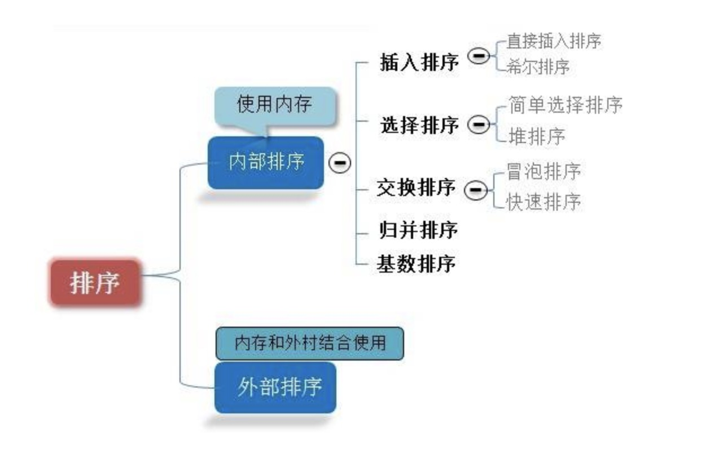

1.冒泡排序（Bubble Sort）

冒泡排序是一种简单的排序算法。它重复地遍历过要排序的数列，每次比较两个元素，如果它们的顺序不符合预期，就把它们的位置交换过来。遍历数列的工作是重复地进行直到没有再需要交换。因为每遍历数列一次，就有一个元素“浮”到数列的顶端，故此叫做“冒泡排序”。
简要步骤
- 比较相邻的元素。如果第一个比第二个大，就交换它们两个；
- 对每一对相邻元素作同样的工作，从开始第一对到结尾的最后一对，这样在最后的元素应该会是最大的数；
- 针对所有的元素重复以上的步骤，除了最后一个；
- 持续每次对越来越少的元素重复上面的步骤，直到没有任何一对数字需要比较。
具体实现
1 2 3 4 5 6 7 8 9 10 11
| Array.prototype.bubble_sort = function() { var i, j, temp for (i = 0; i < this.length - 1; i++) for (j = 0; j < this.length - 1 - i; j++) if (this[j] > this[j + 1]) { temp = this[j] this[j] = this[j + 1] this[j + 1] = temp } return this }
|
改进冒泡排序：设置一标志性变量 pos,用于记录每趟排序中最后一次进行交换的位置。由于 pos 位置之后的记录均已交换到位,故在进行下一趟排序时只要扫描到 pos 位置即可。
1 2 3 4 5 6 7 8 9 10 11 12 13 14 15
| Array.prototype.bubble_sort_improve = function() { var i = this.length - 1 while (i > 0) { var pos = 0 for (var j = 0; j < i; j++) if (this[j] > this[j + 1]) { pos = j var tmp = this[j] this[j] = this[j + 1] this[j + 1] = tmp } i = pos } return this }
|
算法分析
- 最佳情况：T(n) = O(n)
- 最差情况：T(n) = O(n2)
- 平均情况：T(n) = O(n2)
2.选择排序（Selection Sort）

是一种简单直观的排序算法。它的工作原理如下。首先在未排序序列中找到最小（大）元素，存放到排序序列的起始位置，然后，再从剩余未排序元素中继续寻找最小（大）元素，然后放到已排序序列的末尾。以此类推，直到所有元素均排序完毕。
简要步骤
- 初始状态：无序区为 R[1..n]，有序区为空；
- 第 i 趟排序(i=1,2,3…n-1)开始时，当前有序区和无序区分别为 R[1..i-1]和 R(i..n）。该趟排序从当前无序区中-选出关键字最小的记录 R[k]，将它与无序区的第 1 个记录 R 交换，使 R[1..i]和 R[i+1..n)分别变为记录个数增加 1 个的新有序区和记录个数减少 1 个的新无序区；
- n-1 趟结束，数组有序化了。
具体实现
1 2 3 4 5 6 7 8 9 10 11
| Array.prototype.selection_sort = function() { var i, j, min var temp for (i = 0; i < this.length - 1; i++) { min = i for (j = i + 1; j < this.length; j++) if (this[min] > this[j]) min = j temp = this[min] this[min] = this[i] this[i] = temp } }
|
算法分析
- 最佳情况：T(n) = O(n2)
- 最差情况：T(n) = O(n2)
- 平均情况：T(n) = O(n2)
3.插入排序（Insertion Sort）

通过构建有序序列，对于未排序数据，在已排序序列中从后向前扫描，找到相应位置并插入。插入排序在实现上，通常采用 in-place 排序（即只需用到 {\displaystyle O(1)} {\displaystyle O(1)}的额外空间的排序），因而在从后向前扫描过程中，需要反复把已排序元素逐步向后挪位，为最新元素提供插入空间。
简要步骤
- 从第一个元素开始，该元素可以认为已经被排序
- 取出下一个元素，在已经排序的元素序列中从后向前扫描
- 如果该元素（已排序）大于新元素，将该元素移到下一位置
- 重复步骤 3，直到找到已排序的元素小于或者等于新元素的位置
- 将新元素插入到该位置后
- 重复步骤 2~5
具体实现
1 2 3 4 5 6 7 8 9 10 11 12
| Array.prototype.insertion_sort = function() { var i, j for (i = 1; i < this.length; i++) { for (j = 0; j < i; j++) { if (this[j] > this[i]) { this.splice(j, 0, this[i]) this.splice(i + 1, 1) } } } return this }
|
算法分析
- 最佳情况：输入数组按升序排列。T(n) = O(n)
- 最坏情况：输入数组按降序排列。T(n) = O(n2)
- 平均情况：T(n) = O(n2)
4.希尔排序（Shell Sort）

插入排序在对几乎已经排好序的数据操作时，效率高，即可以达到线性排序的效率。但插入排序一般来说是低效的，因为插入排序每次只能将数据移动一位。
简要步骤
- 选择一个增量序列 t1，t2，…，tk，其中 ti>tj，tk=1；
- 按增量序列个数 k，对序列进行 k 趟排序；
- 每趟排序，根据对应的增量 ti，将待排序列分割成若干长度为 m 的子序列，分别对各子表进行直接插入排序。仅增量因子为 1 时，整个序列作为一个表来处理，表长度即为整个序列的长度。
具体实现
1 2 3 4 5 6 7 8 9 10 11
| Array.prototype.shell_sort = function() { var gap, i, j var temp for (gap = this.length >> 1; gap > 0; gap >>= 1) for (i = gap; i < this.length; i++) { temp = this[i] for (j = i - gap; j >= 0 && this[j] > temp; j -= gap) this[j + gap] = this[j] this[j + gap] = temp } }
|
算法分析
- 最佳情况：T(n) = O(nlog2 n)
- 最坏情况：T(n) = O(nlog2 n)
- 平均情况：T(n) =O(nlog n)
5.归并排序（Merge Sort）

归并排序是建立在归并操作上的一种有效的排序算法。该算法是采用分治法（Divide and Conquer）的一个非常典型的应用。归并排序是一种稳定的排序方法。将已有序的子序列合并，得到完全有序的序列；即先使每个子序列有序，再使子序列段间有序。若将两个有序表合并成一个有序表，称为 2-路归并。
简要步骤
- 将序列每相邻两个数字进行归并操作，形成
ceil(n/2)个序列，排序后每个序列包含两/一个元素
- 若此时序列数不是 1 个则将上述序列再次归并，形成
ceil(n/4)个序列，每个序列包含四/三个元素
- 重复步骤 2，直到所有元素排序完毕，即序列数为 1
具体实现
1 2 3 4 5 6 7 8 9 10 11 12 13 14 15
| Array.prototype.merge_sort = function() { var merge = function(left, right) { var final = [] while (left.length && right.length) final.push(left[0] <= right[0] ? left.shift() : right.shift()) return final.concat(left.concat(right)) } var len = this.length if (len < 2) return this var mid = len / 2 return merge( this.slice(0, parseInt(mid)).merge_sort(), this.slice(parseInt(mid)).merge_sort() ) }
|
算法分析
- 最佳情况：T(n) = O(n)
- 最差情况：T(n) = O(nlogn)
- 平均情况：T(n) = O(nlogn)
6.快速排序（Quick Sort）

快速排序的基本思想：通过一趟排序将待排记录分隔成独立的两部分，其中一部分记录的关键字均比另一部分的关键字小，则可分别对这两部分记录继续进行排序，以达到整个序列有序。
简要步骤
- 从数列中挑出一个元素，称为”基准”（pivot），
- 重新排序数列，所有比基准值小的元素摆放在基准前面，所有比基准值大的元素摆在基准后面（相同的数可以到任何一边）。在这个分区结束之后，该基准就处于数列的中间位置。这个称为分区（partition）操作。
- 递归地（recursively）把小于基准值元素的子数列和大于基准值元素的子数列排序。
具体实现
1 2 3 4 5 6 7 8 9 10 11
| Array.prototype.quick_sort = function() { var len = this.length if (len <= 1) return this.slice(0) var left = [] var right = [] var mid = [this[0]] for (var i = 1; i < len; i++) if (this[i] < mid[0]) left.push(this[i]) else right.push(this[i]) return left.quick_sort().concat(mid.concat(right.quick_sort())) }
|
算法分析
- 最佳情况：T(n) = O(nlogn)
- 最差情况：T(n) = O(n2)
- 平均情况：T(n) = O(nlogn
7.堆排序（Heap Sort）

堆排序是指利用堆这种数据结构所设计的一种排序算法。堆积是一个近似完全二叉树的结构，并同时满足堆积的性质：即子结点的键值或索引总是小于（或者大于）它的父节点。
简要步骤
- 将初始待排序关键字序列(R1,R2….Rn)构建成大顶堆，此堆为初始的无序区；
- 将堆顶元素 R[1]与最后一个元素 R[n]交换，此时得到新的无序区(R1,R2,……Rn-1)和新的有序区(Rn),且满足 R[1,2…n-1]<=R[n]；
- 由于交换后新的堆顶 R[1]可能违反堆的性质，因此需要对当前无序区(R1,R2,……Rn-1)调整为新堆，然后再次将 R[1]与无序区最后一个元素交换，得到新的无序区(R1,R2….Rn-2)和新的有序区(Rn-1,Rn)。不断重复此过程直到有序区的元素个数为 n-1，则整个排序过程完成。
具体实现
1 2 3 4 5 6 7 8 9 10 11 12 13 14 15 16 17 18 19 20 21 22 23 24 25 26 27 28 29 30 31 32 33 34 35 36
| Array.prototype.heap_sort = function() { var arr = this.slice(0) function swap(i, j) { var tmp = arr[i] arr[i] = arr[j] arr[j] = tmp } function max_heapify(start, end) { var dad = start var son = dad * 2 + 1 if (son >= end) return if (son + 1 < end && arr[son] < arr[son + 1]) son++ if (arr[dad] <= arr[son]) { swap(dad, son) max_heapify(son, end) } } var len = arr.length for (var i = Math.floor(len / 2) - 1; i >= 0; i--) max_heapify(i, len) for (var i = len - 1; i > 0; i--) { swap(0, i) max_heapify(0, i) } return arr }
|
算法分析
- 最佳情况：T(n) = O(nlogn)
- 最差情况：T(n) = O(nlogn)
- 平均情况：T(n) = O(nlogn)
8.计数排序（Counting Sort）
计数排序是一种稳定的线性时间排序算法。计数排序使用一个额外的数组 C，其中第 i 个元素是待排序数组 A 中值等于 i 的元素的个数。然后根据数组 C 来将 A 中的元素排到正确的位置。
简要步骤
- 找出待排序的数组中最大和最小的元素；
- 统计数组中每个值为 i 的元素出现的次数，存入数组 C 的第 i 项；
- 对所有的计数累加（从 C 中的第一个元素开始，每一项和前一项相加）；
- 反向填充目标数组：将每个元素 i 放在新数组的第 C(i)项，每放一个元素就将 C(i)减去 1。
具体实现
1 2 3 4 5 6 7 8 9 10 11 12 13 14 15 16 17 18 19
| Array.prototype.counting_sort = function() { var len = this.length, B = [], C = [], min = (max = this[0]) for (var i = 0; i < len; i++) { min = min <= this[i] ? min : this[i] max = max >= this[i] ? max : this[i] C[this[i]] = C[this[i]] ? C[this[i]] + 1 : 1 } for (var j = min; j < max; j++) { C[j + 1] = (C[j + 1] || 0) + (C[j] || 0) } for (var k = len - 1; k >= 0; k--) { B[C[this[k]] - 1] = this[k] C[this[k]]-- } return B }
|
算法分析
- 最佳情况：T(n) = O(n+k)
- 最差情况：T(n) = O(n+k)
- 平均情况：T(n) = O(n+k)
9.桶排序（Bucket Sort）
桶排序或所谓的箱排序，是一个排序算法，工作的原理是将数组分到有限数量的桶里。每个桶再个别排序（有可能再使用别的排序算法或是以递归方式继续使用桶排序进行排序）。
简要步骤
- 设置一个定量的数组当作空桶子。
- 寻访序列，并且把项目一个一个放到对应的桶子去。
- 对每个不是空的桶子进行排序。
- 从不是空的桶子里把项目再放回原来的序列中。
具体实现
1 2 3 4 5 6 7 8 9 10 11 12 13 14 15 16 17 18 19 20 21 22 23 24 25 26 27 28 29 30 31 32 33 34 35 36 37 38 39
| Array.prototype.bucket_sort = function(num) { if (this.length <= 1) { return this } var len = this.length, buckets = [], result = [], min = (max = this[0]), regex = '/^[1-9]+[0-9]*$/', space, n = 0 num = num || (num > 1 && regex.test(num) ? num : 10) for (var i = 1; i < len; i++) { min = min <= this[i] ? min : this[i] max = max >= this[i] ? max : this[i] } space = (max - min + 1) / num for (var j = 0; j < len; j++) { var index = Math.floor((this[j] - min) / space) if (buckets[index]) { var k = buckets[index].length - 1 while (k >= 0 && buckets[index][k] > this[j]) { buckets[index][k + 1] = buckets[index][k] k-- } buckets[index][k + 1] = this[j] } else { buckets[index] = [] buckets[index].push(this[j]) } } while (n < num) { result = result.concat(buckets[n]) n++ } return result }
|
算法分析
- 最佳情况：T(n) = O(n+k)
- 最差情况：T(n) = O(n+k)
- 平均情况：T(n) = O(n2)
10.基数排序（Radix Sort）
基数排序是一种非比较型整数排序算法，其原理是将整数按位数切割成不同的数字，然后按每个位数分别比较。由于整数也可以表达字符串（比如名字或日期）和特定格式的浮点数，所以基数排序也不是只能使用于整数。将所有待比较数值（正整数）统一为同样的数位长度，数位较短的数前面补零。然后，从最低位开始，依次进行一次排序。这样从最低位排序一直到最高位排序完成以后，数列就变成一个有序序列。
简要步骤
- 取得数组中的最大数，并取得位数；
- arr 为原始数组，从最低位开始取每个位组成 radix 数组；
- 对 radix 进行计数排序（利用计数排序适用于小范围数的特点）；
具体实现
1 2 3 4 5 6 7 8 9 10 11 12 13 14 15 16 17 18 19 20 21 22 23 24 25 26
| Array.prototype.radix_sort = function(maxDigit) { var mod = 10 var dev = 1 var counter = [] console.time('基数排序耗时') for (var i = 0; i < maxDigit; i++, dev *= 10, mod *= 10) { for (var j = 0; j < this.length; j++) { var bucket = parseInt((this[j] % mod) / dev) if (counter[bucket] == null) { counter[bucket] = [] } counter[bucket].push(this[j]) } var pos = 0 for (var j = 0; j < counter.length; j++) { var value = null if (counter[j] != null) { while ((value = counter[j].shift()) != null) { this[pos++] = value } } } } console.timeEnd('基数排序耗时') return this }
|
算法分析
- 最佳情况：T(n) = O(n * k)
- 最差情况：T(n) = O(n * k)
- 平均情况：T(n) = O(n * k)
基数排序有两种方法：
MSD 从高位开始进行排序
LSD 从低位开始进行排序
基数排序 vs 计数排序 vs 桶排序
这三种排序算法都利用了桶的概念，但对桶的使用方法上有明显差异：
- 基数排序：根据键值的每位数字来分配桶
- 计数排序：每个桶只存储单一键值
- 桶排序：每个桶存储一定范围的数值